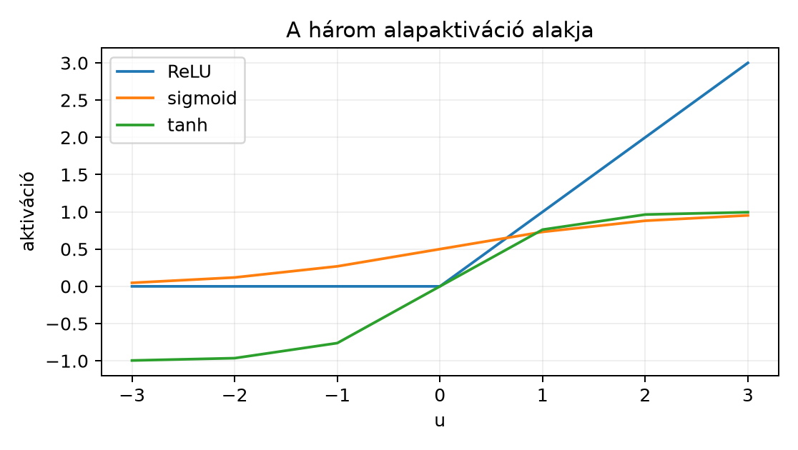

Ez az egység a 9.1. Neuron és perceptron perceptron közvetlen folytatása. Ott beláttuk, hogy az XOR négy pontja lineárisan szeparálhatatlan, ezért egyetlen affin score és küszöbözés nem oldhatja meg. Most azt vizsgáljuk, mit nyerünk, ha több affin réteget komponálunk, és közéjük nemlineáris aktivációt teszünk.
Előismeret a 9.1. Neuron és perceptron alfejezetből: affin score , küszöbözés, lineáris szeparálhatóság. A mátrixműveletekhez a 3.2. Mátrixszorzás és affín réteg, a batch-alakokhoz a 2.1. Python, NumPy és tenzoralak konvencióit használjuk. A kapacitás és a hipotézisosztály mérete a 8.2. Véges hipotézisosztály egyenletes korlátja alfejezetben épült fel, és itt a paraméterszám értelmezésénél térünk vissza rá röviden.
Induló kérdés: két affin réteget kötünk össze, de a kettő közé nem teszünk semmilyen aktivációt. Meg tudja-e tanulni ez a modell az XOR-t? És hány paraméter kell ahhoz, hogy egy rejtett rétegű hálózat a négy XOR-pontot elválassza? Mielőtt tovább olvas, becsülje meg a 2–2–1 méretű hálózat paraméterszámát.
Definíció (két rétegű MLP). Legyen a bemeneti dimenzió, a rejtett szélesség, a kimeneti dimenzió. A modell három lépésből áll:
Batchelt alakban, sor-megfigyelésekkel:
ahol sorirányban broadcastolódik az mátrixhoz, és a kimenet . Osztályozásban logit, tehát aktiváció előtti pontszám; a softmaxot vagy a döntési küszöböt később alkalmazzuk, nem a hálózat belsejében.
A rejtett rétegen a hármast értjük; a vektort rejtett reprezentációnak nevezzük, mert nem célváltozó, hanem a hálózat közbülső belső ábrázolása.
A három leggyakoribb aktiváció pontos definíciója -re:
A sigmoid értékkészlete , ezért logit-utáni valószínűségjelöltként is használjuk; a tanh értékkészlete , és zéruscentrált. A kettő között egyszerű azonosság áll fenn: . Ezt behelyettesítéssel ellenőrizhetjük:
A ReLU a nulla pontban klasszikus értelemben nem differenciálható; ez a forward számításra nincs hatással, de a későbbi gradiensszámításnál (10.2. Affín réteg és aktiváció backward) konvenciót igényel.
Paraméterszám. A fenti hálózatnak paramétere van: elemei , elemei , elemei , elemei . A gyakorlatban a biasokat is paraméternek számoljuk, tehát a 2–2–1 XOR-hálózat paraméterszáma .
A levezetési kötelezettség a következő állítás.
Tétel (aktiváció nélküli rétegek összevonhatósága). Legyen , , , . Ha a két réteg között nincs nemlineáris aktiváció, azaz
akkor minden -re
ahol
Indukcióval tetszőleges számú affin rétegre ugyanez igaz: a teljes kompozíció egyetlen affin leképezés.
Bizonyítás. A mátrixszorzás disztributív az összeadásra nézve, ezért
Az hozzárendelés éppen egy affin réteg, tehát a két rétegű kompozíció nem hoz be új függvényosztályt. Az indukciós lépés: ha az első affin réteg már alakú, akkor az -edik réteg ezen az összevont alakon alkalmazva ugyanezzel a számolással egyetlen affin leképezéssé vonható össze. Az alapeset triviális.
A bizonyítás itt teljes, nincs szükség semmilyen további feltételre. Az állítás mélyebb jelentése: a puszta rétegszám-növelés önmagában nem növeli a reprezentálható függvények halmazát. A 8.2. Véges hipotézisosztály egyenletes korlátja alfejezetben látott kapacitásérveléshez hasonlóan itt is az a kérdés, hogy a paramétertér mely része érhető el ténylegesen; az aktiváció nélküli mély hálózat ugyanannyit tud, mint az egyrétegű, mert a leképezés ugyanaz.
A tétel következménye az induló kérdésre: aktiváció nélkül az XOR sem oldható meg, bárhogyan választjuk a rétegszámot, mert minden ilyen hálózat lineáris osztályozóvá redukálódik.
A ReLU azért hasznos, mert a belőle épített hálózat geometriája pontosan leírható anélkül, hogy a tanítási dinamikát ismernénk.
Állítás (piecewise affine, szakaszonként affin). Legyen és
Ekkor folytonos, és felbontható legfeljebb olyan poliéder-tartományra, amelyeken affin.
Bizonyításvázlat saját levezetéssel. Minden rejtett neuronhoz tartozik egy lineáris pre-aktiváció . Rögzítsünk egy aktivációs mintázatot, és definiáljuk
Ez legfeljebb nyílt vagy zárt féltér metszete, tehát poliéder. A tartományon minden neuron aktivációja rögzített: vagy , vagy . Ezért itt affin függvénye -nek, és mivel affin függvénye -nak, is affin -ben. A darab együttesen lefedi -t, bár a határokon átfedhetnek; a folytonosság garantálja, hogy az átfedő darabok ott megegyeznek. A folytonosság maga abból következik, hogy a ReLU, az affin leképezések és a kompozíció mind folytonosak.
A darabok száma legfeljebb , tehát a rejtett szélességgel exponenciálisan nőhet; ez adja a ReLU-hálózatok kifejezőerejének egyik forrását, amelyet a következő 9.3. Expresszivitás és approximációs állítások egység formalizál.
Használjuk a 9.1. Neuron és perceptron pontjait célokkal:
Válasszuk a következő súlyokat: , , ,
A rejtett pre-aktiváció és aktiváció:
A négy pontra:
A döntési szabály : a két középső pont 1 osztályt kap, a két szélső 0-t. Ez a konstrukció tehát a négy ponton tökéletesen megoldja az XOR-t. A hidden térben a négy pont: , , , ; a affin határ szigorúan elválasztja a két osztályt.
Vegyük észre a kollapszustétel konkrét hatását: ha a ReLU-t elhagyjuk, akkor
tehát a lineárissá összevont modell . A négy ponton ez értéket ad: a pont a legnagyobb logitot kapta, miközben 0 osztályú, ezért küszöbözéssel nem lehet mind a négy pontot helyesen osztályozni.
A labor célja, hogy a fenti kézi konstrukciót ellenőrizhető kóddal számolja ki. Mivel a konstrukció determinisztikus, seedre nincs szükség; dtype float64, device CPU.
Munkakönyvtár: n034_labor/. Fájl:
xor_mlp_forward.py.
import numpy as np
# dtype float64, CPU, nincs véletlen forrás
W1 = np.array([[1.0, 1.0],
[1.0, 1.0]], dtype=np.float64) # (2, 2)
b1 = np.array([-0.5, -1.5], dtype=np.float64) # (2,)
W2 = np.array([[2.0, -6.0]], dtype=np.float64) # (1, 2)
b2 = np.array([0.0], dtype=np.float64) # (1,)
X = np.array([[0.0, 0.0],
[1.0, 0.0],
[0.0, 1.0],
[1.0, 1.0]], dtype=np.float64) # (4, 2)
def relu(u):
return np.maximum(0.0, u)
Z_pre1 = X @ W1.T + b1 # (4, 2) + (2,) sorirányú broadcast
H = relu(Z_pre1) # (4, 2)
Z = H @ W2.T + b2 # (4, 1)
print("H shape:", H.shape)
print("Z shape:", Z.shape)
print("H:\n", H)
print("Z:\n", Z)
pred = (Z > 0.5).astype(np.int64)
print("pred:\n", pred.ravel())
expected = np.array([[0.0], [1.0], [1.0], [0.0]], dtype=np.float64)
print("allclose expected:", np.allclose(Z, expected, atol=1e-12))Futtatás: python xor_mlp_forward.py a
n034_labor/ könyvtárban. A várt kimenet jelölt
szemléltetés, nem mért futás:
H shape: (4, 2)
Z shape: (4, 1)
H:
[[0. 0. ]
[0.5 0. ]
[0.5 0. ]
[1.5 0.5]]
Z:
[[0.]
[1.]
[1.]
[0.]]
pred:
[0 1 1 0]
allclose expected: TrueAz ellenőrzés a négy logit pontos egyezését kéri
atol=1e-12 tűréssel; a műveletek feles értékeket
tartalmaznak, amelyek float64-ben pontosan reprezentálhatók, ezért a
tűrés bőséges. Az eredmény értelmezése: a rejtett reprezentációban a két
osztály már lineárisan szeparálható, és a kimeneti réteg ezt a
szeparációt valósítja meg.

F1 (fogalmi, nehézség 1). Magyarázza el, miért nem oldható meg az XOR két affin réteggel aktiváció nélkül. A fenti XOR-súlyokból kiindulva írja fel az összevont affin függvényt, és mutassa meg, hogy nincs olyan küszöb, amely mind a négy pontot helyesen osztályozza.
F2 (levezetési/bizonyítási, nehézség 2). Legyen , , . Adja meg a
súlyokat aktiváció nélküli kompozícióhoz. Vezesse le a kollapszustétel alkalmazásával -t és -t, majd az ponton ellenőrizze a közvetlen és az összevont számítást.
F3 (implementációs, nehézség 1). Írjon
NumPy-függvényt mlp_forward(X, W1, b1, W2, b2) néven, amely
ReLU aktivációval számolja a két rétegű MLP logitjait. Az inputok alakja
;
a visszatérés alakja
.
Tesztelje a labor XOR-példáján, és ellenőrizze a shape-eket
mellett atol=1e-12 tűréssel.
F4 (hibakeresési, nehézség 2). Egy hallgató a következő előrefelé számítást írta:
H = relu(X @ W1.T + b1)
Z = relu(H @ W2.T + b2)A tanítás során a loss nem csökken 0.3 alá egy bináris XOR-feladaton BCEWithLogitsLoss-szal, pedig a cél logitoknak a 0 osztályú pontokon negatívnak kellene lenniük. Hol van a hiba, mi a következménye a logitokra és a gradiensre, és hogyan javítandó?
F5 (kísérleti/transzfer, nehézség 2). Tervezzen kontrollált kísérletet annak eldöntésére, hogy egy rejtett rétegű MLP szükséges-e az XOR megtanulásához. Adja meg: az adatot (a négy pont, illetve annak zajosított változatai), a train/val felosztást, a baseline-t (perceptron), a változó tényezőt (rejtett réteg jelenléte), a metrikát, legalább 5 seeddel való ismétlést, és a következtetés érvényességi korlátját.
F1 megoldása. Az aktiváció nélküli két rétegű modell a kollapszustétel miatt egyetlen affin függvény. A megadott súlyokkal a fenti levezetés alapján . A négy ponton a logitok:
A helyes osztályozáshoz valamilyen -ra és , tehát ; ugyanakkor , tehát . Egyszerre és lehetetlen. A pont logitja is 0 osztályú, ami konzisztens lenne, de a pont magas logitja már kizárja a küszöbözést. Tehát nincs megfelelő lineáris osztályozó.
F2 megoldása. A kollapszustétel képleteivel:
Közvetlen számítás: ; majd -vel és b2-vel: . Összevontan: . A két út megegyezik; az alakellenőrzés: , .
F3 megoldása.
import numpy as np
def mlp_forward(X, W1, b1, W2, b2):
# X: (N,d), W1: (m,d), b1: (m,), W2: (K,m), b2: (K,)
Z = X @ W1.T + b1 # (N,m)
H = np.maximum(0.0, Z) # (N,m)
return H @ W2.T + b2 # (N,K)
W1 = np.array([[1.0, 1.0], [1.0, 1.0]], dtype=np.float64)
b1 = np.array([-0.5, -1.5], dtype=np.float64)
W2 = np.array([[2.0, -6.0]], dtype=np.float64)
b2 = np.array([0.0], dtype=np.float64)
X = np.array([[0.0, 0.0], [1.0, 0.0], [0.0, 1.0], [1.0, 1.0]],
dtype=np.float64)
Z = mlp_forward(X, W1, b1, W2, b2)
expected = np.array([[0.0], [1.0], [1.0], [0.0]], dtype=np.float64)
assert Z.shape == (4, 1)
assert np.allclose(Z, expected, atol=1e-12)
print("OK", Z.shape, Z.ravel())Az ellenőrzés a shape-re és a négy logitra terjed ki. A
np.maximum(0.0, Z) koordinátánkénti ReLU, tehát a
batch-művelet is pontosan a definíciót követi.
F4 megoldása. A hiba a kimeneti rétegen lévő
felesleges ReLU. A BCEWithLogitsLoss bemenete logit, amelynek negatívnak
is kell tudnia lenni, hiszen a szigmoidon átmenve ebből lesz
-nél
kisebb valószínűség. A ReLU a negatív logitokat nullára vágja, így a 0
osztályú pontokra a modell legjobb esetben is
körüli valószínűséget tud adni, a loss nem mehet a kívánt szint alá, és
a BCEWithLogits gradiensét is torzítja a saturáció. A javítás:
Z = H @ W2.T + b2, aktiváció nélkül. A visszaellenőrzés a
labor XOR-példáján: a negatív logitot igénylő konstrukció, például
,
a javított kódban
értéket ad a
pontra, a hibás kódban
-t,
és ez a döntési határt is eltolhatja.
F5 megoldásminta. Az adat a négy XOR-pont, valamint ezekből képzett zajos változatok: minden ponthoz adjunk kis független Gauss-zajt, a címke az eredeti pont címkéje marad; ez a feladat nehezedik, de a cél itt a kontroll. A split: a négy alappont mindig jelenjen meg trainben; a zajos pontokból 60% train, 40% val partíció. A baseline a 9.1. Neuron és perceptron perceptron; a változó tényező a rejtett réteg megléte, azonos szélességgel. Metrika: accuracy a val némileg zajos pontjain. Öt különböző seed mellett tanítsuk mindkét modellt, rögzítve a tanulási rátát, az epochok számát és az inicializálást. A várt jelenség: a perceptron a tiszta XOR-on körül marad, az MLP a tiszta pontokon -ot érhet el. A következtetés korlátja: ez a kísérlet a 2-dimenziós XOR-ra bizonyítja a rejtett réteg szükségességét, de általános architektúra-állítást nem alapoz meg; ahhoz a hipotézisosztályok összehasonlítására és nagyobb adatra van szükség a 8.2. Véges hipotézisosztály egyenletes korlátja keretében.
A leggyakoribb tévedés: „több lineáris réteg mégiscsak gazdagabb modellt ad, mert több paramétere van.” Ez hamis. A kollapszustétel bizonyítja, hogy a kompozíció függvényosztálya nem bővül: bármely két affin réteg egyetlen párba írható át. Az XOR-példán a 9 paraméteres lineáris hálózat is csak a , affin egyenes családját valósítja meg, és a fentiek szerint nem tudja a négy pontot elválasztani. A paraméterszám tehát önmagában nem reprezentációs erő; a nemlinearitás hiánya miatt a plusz paraméterek egy része redundáns.
Rövid önellenőrzés. (1) Melyik azonosság köti össze a sigmoidot és a tanh-t? (2) Miért elegendő a ReLU-t koordinátánként definiálni? (3) Ha valamely konstansra, kollapszál-e a két réteg? (Válasz: igen, mert lineáris, és a kollapszustétel bizonyításában a szorzó beolvad -be; a nemlinearitásnak ténylegesen nemlineárisnak kell lennie.)
Korábbi fogalom visszahívása: a 9.1. Neuron és perceptron alfejezetben a konvex burokkal bizonyítottuk az XOR lineáris szeparálhatatlanságát. Az itteni kollapszustétel ennek az állításnak a mélységi kiterjesztése: akármilyen mély, de aktiváció nélküli hálózat sem tud többet egy perceptronnál. A 8.2. Véges hipotézisosztály egyenletes korlátja alfejezetben tárgyalt kapacitásfogalom szempontjából ez arra figyelmeztet, hogy a hipotézisosztály tényleges méretét a nemlinearitás, nem a puszta rétegszám határozza meg.
A két rétegű MLP rejtett affin transzformációt, koordinátánkénti nemlineáris aktivációt és kimeneti affin réteget komponál. ReLU-val a hálózat folytonos és szakaszonként affin: legfeljebb poliéder-darabon egy-egy affin függvény. Aktiváció nélkül bármennyi affin réteg egyetlen , paraméterű affin leképezéssé vonható össze, tehát a rétegmélység önmagában nem növeli a kifejezőerőt. A kézi XOR-konstrukció 9 paraméterrel és 2 rejtett neuronnal elválasztja a négy pontot, amelyeket perceptron nem tud; a NumPy-forward ezt ellenőrzi.
A következő 9.3. Expresszivitás és approximációs állítások egységben ezt a kifejezőerőt formalizáljuk approximációs tételekkel, és a P24 Cybenko-eredmény feltételeit is ott tárgyaljuk.